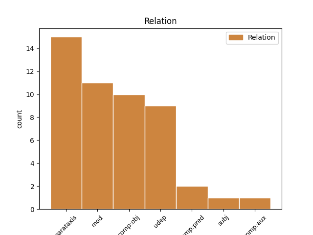
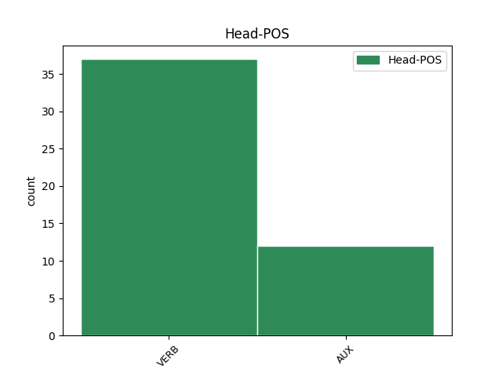
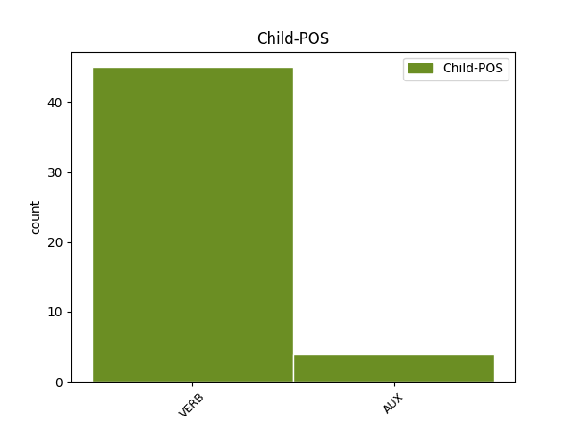

Distribution of features within this leaf



Agreement Rules sorted by frequency.
- When the dependent token is the parataxis(parataxis) of the head token, and the head token is VERB and the dependent token is VERB.
1 ئۇ _ _ _ _ 0 _ _ _
2 ئويغاندى ئويغان VERB V Mood=Ind|Number=Sing|Person=3|Tense=Past|VerbForm=Fin 7 parataxis _ SpaceAfter=No|Translit=oyghandi
3 ، _ _ _ _ 0 _ _ _
4 قاراڭلار _ _ _ _ 0 _ _ _
5 ، _ _ _ _ 0 _ _ _
6 ئۇ _ _ _ _ 0 _ _ _
7 ئويغاندى ئويغان VERB V Mood=Ind|Number=Sing|Person=3|Tense=Past|VerbForm=Fin 0 _ _ _
8 ! _ _ _ _ 0 _ _ _
1 ئۇ _ _ _ _ 0 _ _ _
2 مېنىڭ _ _ _ _ 0 _ _ _
3 يېنىمغا _ _ _ _ 0 _ _ _
4 كەلگەندە كەل VERB V Case=Loc|Tense=Past|VerbForm=Ger 11 mod _ SpaceAfter=No|Translit=kelgende
5 : _ _ _ _ 0 _ _ _
6 سىز _ _ _ _ 0 _ _ _
7 ئورنىڭىزدىن _ _ _ _ 0 _ _ _
8 تۇرۇڭا _ _ _ _ 0 _ _ _
9 ، _ _ _ _ 0 _ _ _
10 - _ _ _ _ 0 _ _ _
11 دېدى دې VERB V Mood=Ind|Number=Sing|Person=3|Tense=Past|VerbForm=Fin 0 _ _ _
12 . _ _ _ _ 0 _ _ _
1 مۇئەللىم _ _ _ _ 0 _ _ _
2 قولىدىكى _ _ _ _ 0 _ _ _
3 سائىتىگە _ _ _ _ 0 _ _ _
4 قاراپ _ _ _ _ 0 _ _ _
5 قويۇپ _ _ _ _ 0 _ _ _
6 : _ _ _ _ 0 _ _ _
7 - _ _ _ _ 0 _ _ _
8 ئەلى _ _ _ _ 0 _ _ _
9 ، _ _ _ _ 0 _ _ _
10 توپتوغرا _ _ _ _ 0 _ _ _
11 يىگىرمە _ _ _ _ 0 _ _ _
12 مىنۇت _ _ _ _ 0 _ _ _
13 كېچىكتىڭىز كېچىك VERB N Mood=Ind|Number=Sing|Person=2|Polite=Form|Tense=Past|VerbForm=Fin 16 comp:obj _ SpaceAfter=No|Translit=këchiktingiz
14 ، _ _ _ _ 0 _ _ _
15 - _ _ _ _ 0 _ _ _
16 دېدى دې VERB V Mood=Ind|Number=Sing|Person=3|Tense=Past|VerbForm=Fin 0 _ _ _
17 - _ _ _ _ 0 _ _ _
18 دە _ _ _ _ 0 _ _ _
19 ، _ _ _ _ 0 _ _ _
20 گەپ _ _ _ _ 0 _ _ _
21 قىلماستىن _ _ _ _ 0 _ _ _
22 ئولتۇرۇشقا _ _ _ _ 0 _ _ _
23 رۇخسەت _ _ _ _ 0 _ _ _
24 قىلدى _ _ _ _ 0 _ _ _
25 . _ _ _ _ 0 _ _ _
1 مەقسىتىمگە _ _ _ _ 0 _ _ _
2 يەتتىم _ _ _ _ 0 _ _ _
3 ، _ _ _ _ 0 _ _ _
4 دەپ _ _ _ _ 0 _ _ _
5 ئويلىغان _ _ _ _ 0 _ _ _
6 پېتېر _ _ _ _ 0 _ _ _
7 بۇ _ _ _ _ 0 _ _ _
8 پۇلنى _ _ _ _ 0 _ _ _
9 يانچۇقىغا _ _ _ _ 0 _ _ _
10 سالاي _ _ _ _ 0 _ _ _
11 دەپ _ _ _ _ 0 _ _ _
12 تۇرغاندا تۇر VERB V Case=Loc|Tense=Past|VerbForm=Ger 22 udep _ SpaceAfter=No|Translit=turghanda
13 ، _ _ _ _ 0 _ _ _
14 تۇيۇقسىز _ _ _ _ 0 _ _ _
15 چىنىسىنىڭ _ _ _ _ 0 _ _ _
16 يېنىغا _ _ _ _ 0 _ _ _
17 قويۇپ _ _ _ _ 0 _ _ _
18 قويۇلغان _ _ _ _ 0 _ _ _
19 ھېسابات _ _ _ _ 0 _ _ _
20 قەغىزىگە _ _ _ _ 0 _ _ _
21 كۆزى _ _ _ _ 0 _ _ _
22 چۈشتى چۈش VERB V Mood=Ind|Number=Sing|Person=3|Tense=Past|VerbForm=Fin 0 _ _ _
23 . _ _ _ _ 0 _ _ _
1 _ _ _ _ _ 0 _ _ _
2 رەھمەت _ _ _ _ 0 _ _ _
3 سىزگە _ _ _ _ 0 _ _ _
4 ، _ _ _ _ 0 _ _ _
5 ئايخان _ _ _ _ 0 _ _ _
6 ، _ _ _ _ 0 _ _ _
7 بىزنىڭ _ _ _ _ 0 _ _ _
8 ئەڭ _ _ _ _ 0 _ _ _
9 مۈشكۈل _ _ _ _ 0 _ _ _
10 ئىشىمىزنى _ _ _ _ 0 _ _ _
11 ھەل _ _ _ _ 0 _ _ _
12 قىلىپ _ _ _ _ 0 _ _ _
13 بەرگەن بەر VERB V Mood=Ind|Number=Sing|Person=3|Tense=Past|VerbForm=Fin 14 comp:pred _ Translit=bergen
14 بولدىڭىز بول AUX V Mood=Ind|Number=Sing|Person=2|Polite=Form|Tense=Past|VerbForm=Fin 0 _ _ _
15 . _ _ _ _ 0 _ _ _
1 ئاخشام _ _ _ _ 0 _ _ _
2 ناھايىتى _ _ _ _ 0 _ _ _
3 ئۇزاق _ _ _ _ 0 _ _ _
4 ئويلاپ _ _ _ _ 0 _ _ _
5 كەتتۇق كەت AUX V Mood=Ind|Number=Plur|Person=1|Tense=Past|VerbForm=Fin 8 comp:obj _ SpaceAfter=No|Translit=kettuq
6 ، _ _ _ _ 0 _ _ _
7 _ _ _ _ _ 0 _ _ _
8 دېدى دې VERB V Mood=Ind|Number=Sing|Person=3|Tense=Past|VerbForm=Fin 0 _ _ _
9 ئۇ _ _ _ _ 0 _ _ _
10 ، _ _ _ _ 0 _ _ _
1 سەن _ _ _ _ 0 _ _ _
2 بىزگە _ _ _ _ 0 _ _ _
3 ئاكا _ _ _ _ 0 _ _ _
4 ئىدىڭ ئى AUX V Mood=Ind|Number=Sing|Person=2|Tense=Past|VerbForm=Fin 10 parataxis _ SpaceAfter=No|Translit=iding
5 ، _ _ _ _ 0 _ _ _
6 لېكىن _ _ _ _ 0 _ _ _
7 سەن _ _ _ _ 0 _ _ _
8 بىزگە _ _ _ _ 0 _ _ _
9 ئاتىمۇ _ _ _ _ 0 _ _ _
10 بولدۇڭ بول AUX V Mood=Ind|Number=Sing|Person=2|Tense=Past|VerbForm=Fin 0 _ _ _
11 . _ _ _ _ 0 _ _ _
1 بېكەتكە _ _ _ _ 0 _ _ _
2 يېتىپ _ _ _ _ 0 _ _ _
3 باراي _ _ _ _ 0 _ _ _
4 دېگەندە دې VERB V Case=Loc|Tense=Past|VerbForm=Ger 8 udep _ SpaceAfter=No|Translit=dëgende
5 ، _ _ _ _ 0 _ _ _
6 ئاپتوبۇس _ _ _ _ 0 _ _ _
7 مېڭىپ _ _ _ _ 0 _ _ _
8 كەتتى كەت AUX V Mood=Ind|Number=Sing|Person=3|Tense=Past|VerbForm=Fin 0 _ _ _
9 . _ _ _ _ 0 _ _ _
1 ئۇستاز _ _ _ _ 0 _ _ _
2 يوليورۇق _ _ _ _ 0 _ _ _
3 بېرىپ _ _ _ _ 0 _ _ _
4 بولغان _ _ _ _ 0 _ _ _
5 ، _ _ _ _ 0 _ _ _
6 شۇنىڭ _ _ _ _ 0 _ _ _
7 بىلەن _ _ _ _ 0 _ _ _
8 « _ _ _ _ 0 _ _ _
9 ۋەسسالام _ _ _ _ 0 _ _ _
10 ، _ _ _ _ 0 _ _ _
11 دېمەككە _ _ _ _ 0 _ _ _
12 » _ _ _ _ 0 _ _ _
13 بولىدۇ بول AUX V Mood=Ind|Number=Sing|Person=3|Tense=Aor|VerbForm=Fin 18 udep _ SpaceAfter=No|Translit=bolidu
14 ، _ _ _ _ 0 _ _ _
15 گەپ _ _ _ _ 0 _ _ _
16 قىلىشنىڭ _ _ _ _ 0 _ _ _
17 ئورنى _ _ _ _ 0 _ _ _
18 قالمايدۇ قال VERB V Mood=Ind|Number=Sing|Person=3|Polarity=Neg|Tense=Aor|VerbForm=Fin 0 _ _ _
19 . _ _ _ _ 0 _ _ _
1 گالىلېي _ _ _ _ 0 _ _ _
2 تەجرىبىنى _ _ _ _ 0 _ _ _
3 توختىتىشنى _ _ _ _ 0 _ _ _
4 رەت _ _ _ _ 0 _ _ _
5 قىلدى قىل VERB V Mood=Ind|Number=Sing|Person=3|Tense=Past|VerbForm=Fin 12 parataxis _ SpaceAfter=No|Translit=qildi
6 ، _ _ _ _ 0 _ _ _
7 شۇڭا _ _ _ _ 0 _ _ _
8 ئۇلار _ _ _ _ 0 _ _ _
9 تەھدىتنى _ _ _ _ 0 _ _ _
10 ئەمەلدە _ _ _ _ 0 _ _ _
11 كۆرسەتمەكچى _ _ _ _ 0 _ _ _
12 بولدى بول AUX V Mood=Ind|Number=Sing|Person=3|Tense=Past|VerbForm=Fin 0 _ _ _
13 . _ _ _ _ 0 _ _ _
1 ئۇلارنىڭ _ _ _ _ 0 _ _ _
2 ئەڭ _ _ _ _ 0 _ _ _
3 ئاۋۋال _ _ _ _ 0 _ _ _
4 كۆرگىنى كۆر VERB N Case=Nom|Number[psor]=Plur,Sing|Person[psor]=3|Tense=Past|VerbForm=Ger 9 subj _ Translit=körgini
5 ئىنتايىن _ _ _ _ 0 _ _ _
6 غەلىتە _ _ _ _ 0 _ _ _
7 بىر _ _ _ _ 0 _ _ _
8 مەنزىرە _ _ _ _ 0 _ _ _
9 بولدى بول AUX V Mood=Ind|Number=Sing|Person=3|Tense=Past|VerbForm=Fin 0 _ _ _
10 : _ _ _ _ 0 _ _ _
Disagree Examples:
1 نەشپۈت _ _ _ _ 0 _ _ _
2 بەش _ _ _ _ 0 _ _ _
3 يىلدا _ _ _ _ 0 _ _ _
4 ، _ _ _ _ 0 _ _ _
5 ئۆرۈك _ _ _ _ 0 _ _ _
6 تۆت _ _ _ _ 0 _ _ _
7 يىلدا _ _ _ _ 0 _ _ _
8 مېۋە _ _ _ _ 0 _ _ _
9 بېرىدۇ بار VERB V Mood=Ind|Number=Sing|Person=3|Tense=Aor|VerbForm=Fin 10 comp:obj _ Translit=bëridu
10 دېگەننى دې VERB V Case=Acc|Tense=Past|VerbForm=Ger 0 _ _ _
11 ئاڭلىمىغانمىدىڭ _ _ _ _ 0 _ _ _
12 ؟ _ _ _ _ 0 _ _ _
1 ئۆرۈك _ _ _ _ 0 _ _ _
2 تۆت _ _ _ _ 0 _ _ _
3 يىلدا _ _ _ _ 0 _ _ _
4 ، _ _ _ _ 0 _ _ _
5 شاپتۇل _ _ _ _ 0 _ _ _
6 ئۈچ _ _ _ _ 0 _ _ _
7 يىللدا _ _ _ _ 0 _ _ _
8 مېۋىگە _ _ _ _ 0 _ _ _
9 كىرىدۇ كىر VERB V Mood=Ind|Number=Sing|Person=3|Tense=Aor|VerbForm=Fin 10 comp:obj _ Translit=kiridu
10 دېگەن دې VERB V Case=Nom|Tense=Past|VerbForm=Part 0 _ _ _
11 گەپ _ _ _ _ 0 _ _ _
12 بار _ _ _ _ 0 _ _ _
13 . _ _ _ _ 0 _ _ _
1 شاپتۇل _ _ _ _ 0 _ _ _
2 تۆت _ _ _ _ 0 _ _ _
3 يىلدا _ _ _ _ 0 _ _ _
4 ، _ _ _ _ 0 _ _ _
5 گىلاس _ _ _ _ 0 _ _ _
6 ئۈچ _ _ _ _ 0 _ _ _
7 يىلدا _ _ _ _ 0 _ _ _
8 مېۋىگە _ _ _ _ 0 _ _ _
9 كىرىدۇ كىر VERB V Mood=Ind|Number=Sing|Person=3|Tense=Aor|VerbForm=Fin 10 comp:obj _ Translit=kiridu
10 دېگەن دې VERB V Case=Nom|Tense=Past|VerbForm=Part 0 _ _ _
11 گەپ _ _ _ _ 0 _ _ _
12 بار _ _ _ _ 0 _ _ _
13 . _ _ _ _ 0 _ _ _
1 چوڭ _ _ _ _ 0 _ _ _
2 بولغاندا بول VERB V Case=Loc|Tense=Past|VerbForm=Ger 9 udep _ Translit=bolghanda
3 چوقۇم _ _ _ _ 0 _ _ _
4 بۇنىڭدىنمۇ _ _ _ _ 0 _ _ _
5 چوڭ _ _ _ _ 0 _ _ _
6 كىتابلارنى _ _ _ _ 0 _ _ _
7 ئوقۇيالايدىغان _ _ _ _ 0 _ _ _
8 ئادەم _ _ _ _ 0 _ _ _
9 بولىمەن بول VERB V Mood=Ind|Number=Sing|Person=1|Tense=Aor|VerbForm=Fin 0 _ _ _
10 . _ _ _ _ 0 _ _ _
1 2010 _ _ _ _ 0 _ _ _
2 - _ _ _ _ 0 _ _ _
3 يىللىق _ _ _ _ 0 _ _ _
4 باھا _ _ _ _ 0 _ _ _
5 بويىچە _ _ _ _ 0 _ _ _
6 ھېسابلىغاندا ھېسابلى VERB V Case=Loc|Tense=Past|VerbForm=Ger 20 mod _ SpaceAfter=No|Translit=hësablighanda
7 ، _ _ _ _ 0 _ _ _
8 2015 _ _ _ _ 0 _ _ _
9 - _ _ _ _ 0 _ _ _
10 يىلىغا _ _ _ _ 0 _ _ _
11 بارغاندا _ _ _ _ 0 _ _ _
12 ئىچكى _ _ _ _ 0 _ _ _
13 ئىشلەپچىقىرىش _ _ _ _ 0 _ _ _
14 ئومۇمىي _ _ _ _ 0 _ _ _
15 قىممىتى _ _ _ _ 0 _ _ _
16 55 _ _ _ _ 0 _ _ _
17 تىرىليون _ _ _ _ 0 _ _ _
18 يۈەندىن _ _ _ _ 0 _ _ _
19 ئېشىپ _ _ _ _ 0 _ _ _
20 كېتىدۇ كەت AUX V Mood=Ind|Number=Sing|Person=3|Tense=Aor|VerbForm=Fin 0 _ _ _
21 . _ _ _ _ 0 _ _ _